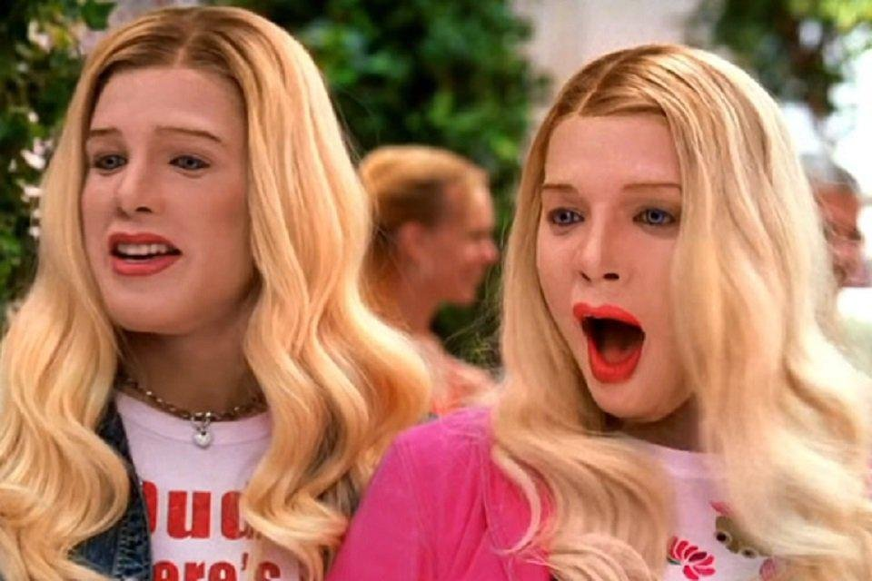

2. Meu Primeiro Site
Neste projeto, utilizo HTML para criar uma página web com textos, imagens e links. É uma oportunidade de praticar programação e aprender como a internet funciona.

Conheça um pouco sobre mim!
Olá! Meu nome é Bruna Eduarda, tenho 17anos e moro em Jabequara de Areia Sou uma pessoa legal, criativa e que gosta de aprender coisas novas. Tenho interesse em criminologia, criatividade e desenvolvimento de projetos. Acredito que cada dia é uma oportunidade de evoluir! Minha frase favorita é: "A fé na vitória tem que ser inababalável."

Minha trajetória escolar tem sido uma jornada de descobertas e aprendizado. Atualmente, estudo no SESI Candeias e busco desenvolver habilidades que possam contribuir para meu futuro.
Estes são dois exemplos de projetos realizados
Neste projeto, utilizo HTML para criar uma página web com textos, imagens e links. É uma oportunidade de praticar programação e aprender como a internet funciona.
Este projeto representa uma ideia pessoal que desejo desenvolver. Meu objetivo é transformar criatividade em algo útil, interessante e que possa ajudar outras pessoas.

Nos meus momentos livres, gosto de:

O filme apresenta uma investigação feita num hotel de luxo, e dois amigos tiveram que se disfarçar e ficar no lugar de duas irmãs.

A história acompanha Olive Smith, uma dedicada estudante de doutorado em Biologia na Universidade Stanford que não acredita no amor. Para convencer sua melhor amiga de que superou um ex-namorado, Olive beija impulsivamente o Dr. Adam Carlsen, o professor mais jovem, brilhante e tirânico do departamento. Para a surpresa dela, o temido cientista aceita entrar em um namoro falso que trará benefícios acadêmicos para ambos, iniciando um verdadeiro experimento científico sobre a atração

Minha música favorita é Join me in death, da banda HIM. Gosto dela porque sua melodia e sua letra me transmitem sentimentos especiais e combinam com minha personalidade.